1/2
1/2
26/57
7/19

21/38
25/38
59/114
For example, consider the position A shown below on a 3×3 board, with the computer to move. There are 3 equally likely enemy moves, labeled A, 0, and 1. These represent your probabilities of surviving this position. You will lose if the enemy moves to 0 regardless of your next action. You can win if the enemy moves to 1, since you can fire your guns and destroy the enemy ship. And if the enemy moves to A, you can move south east, which essentially gives the same position rotated. Thus the law of total probability says A = (A + 0 + 1) / 3, or A = 1/2.
| 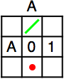 1/2 |
The survival probabilities of every possible position in the 3×3 game with one enemy ship are shown below. The numbers indicate the probabilities of survival if the enemy ship starts there, with the computer to move. Blank squares indicate no chance of survival.
| 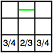 | 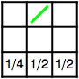 | 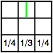 | 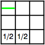 |
What are the survival probabilities on a 3×4 board? How about 2×n boards? What about larger boards?
When there are multiple enemy ships, this additional information is needed. Ships that are destroyed become wreckage squares that can not be visited by either you or enemy ships, but can still be fired over. Only one enemy ship can be on a square at one time, so enemy ships choose moves uniformly to maximize the number of ships that move closer to your ship. What are your chances of survival against multiple enemies on some small boards?
| 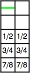 |
On a 3×4 board, the critical cycle probabilities are these 5 positions:
| 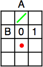 19/37 | 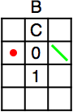 20/37 | 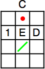 23/37 | 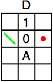 56/111 | 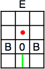 40/111 |
On a 4×4 board, the critical cycle probabilities are these 5 positions:
| 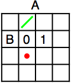 9/16 | 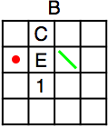 11/16 | 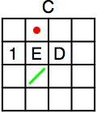 31/48 | 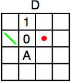 25/48 | 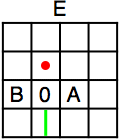 5/12 |
On a 3×5 board, the critical cycle probabilities are these 7 positions:
| 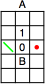 1/2 | 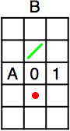 1/2 | 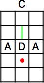 26/57 | 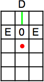 7/19 | 21/38 | 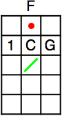 25/38 | 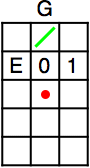 59/114 |
For 2×n boards with 2 enemy ships, the situation is more complicated. If the distances to the two ships are the same, one can easily be shot, which reduces the problem to the one enemy case. If the distances to the two ships differ by more than 1, the farther ship can always be shot when it is squeezing past the wreckage of the first ship, so the survival probabilities are the same as those involving only the closest enemy. If the distances to the two ships differ by 1, there are many cases to consider, but if your ship is horizontal, and the enemies are distance k and k+1 about to move (for k≥1), your probability of survival is (4k–6×2k+8)/4k.
What about the case of 3 or more enemy ships on a 2×n board?
If you can extend any of these results, please e-mail me. Click here to go back to Math Magic. Last updated 1/1/16.